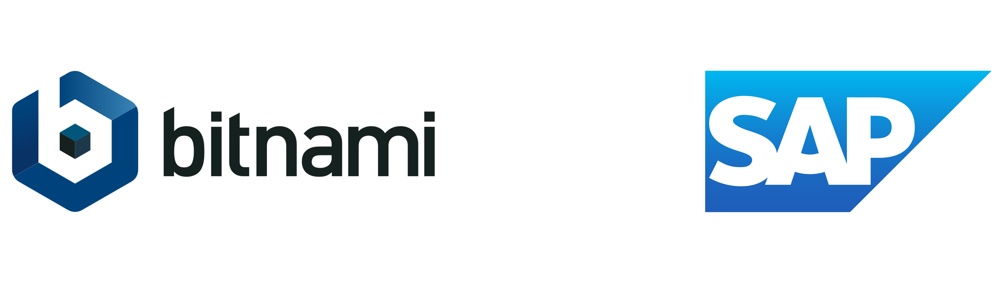
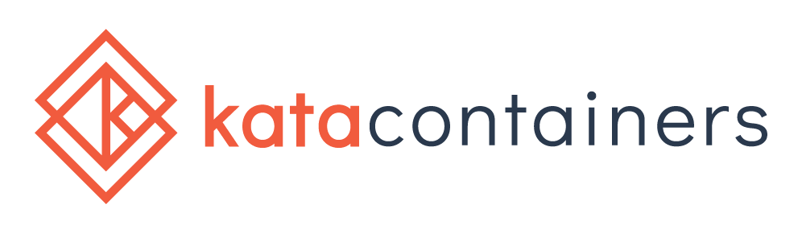
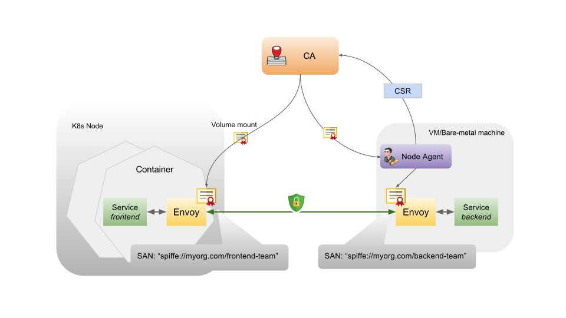

# Securing Serverless Functions via Kubernetes Objects * Sebastien Goasguen, Bitnami, @sebgoa * kompose, Cabin, kmachine, LF certification course ... * Now at Bitnami (Charts, kubeapps, kubecfg, sealed-secrets) * Apps, Apps, Apps...on any platform * Johannes Engelke, SAP Hybris, @quablab <p align="center">  </p> --- ## What type of Apps * Cloud Events based distributed apps * Composed of many different services triggered by events * Services can be onprem or public Cloud services * _AWS Lambda Clone_ --- ## Kubeless * [kubeless.io](http://kubeless.io) * [https://github.com/kubeless/kubeless](https://github.com/kubeless/kubeless) Open Source * [https://github.com/kubeless](https://github.com/kubeless)  * Same realm as Apache OpenWhisk, Fission, Nuclio, OpenFaaS, Fn ... --- ## kubeless * Kubernetes extension * CRD for `functions` * A controller (actually several) * Creates deployments, services * Creates Ingress if needed * Uses Configmap and build system * Instrumented runtimes with `prometheus-client` * A `serverless` Plugin * Custom metrics HPA * Support for CloudEvents (see Austen's talk) --- ## Serverless  Serverless support for kubeless `sls create --template kubeless-python --path mypythonfunction` `sls create --template kubeless-nodejs --path mynodefunction` * [https://serverless.com](https://serverless.com) --- ## Original Architecture  --- ## Current Architecture in v1.0.0-alpha.1  --- ## Security of Functions * Internal security * External security Internal Security: * Authentication / Authorization for who can CRUD functions where * Limit what a compromised function could do * Audit function creation * Log function External Security: * Mostly authentication issue for now * Who can call functions (e.g Ingress auth) * Who can a function call (e.g Function auth to an external service) --- ## Maybe you prefer a picture  --- ## Authentication Functions are CRD custom objects. Extension of k8s API server. Secure Auth out of the box. <pre> apiVersion: kubeless.io/v1beta1 kind: Function metadata: labels: bar: baz created-by: kubeless foo: bar function: foo name: foo namespace: default </pre> --- ## RBAC Out of the Box ``` $ kubectl get functions --context=kubecon Error from server (Forbidden): functions.kubeless.io is forbidden: User "foobar" cannot list functions.kubeless.io in the namespace "default" $ kubectl create role function-reader --verb=get,list,watch --resource=functions role "function-reader" created $ kubectl create rolebinding function-reader --role function-reader --user=foobar rolebinding "function-reader" created $ kubectl get functions --context=kubecon No resources found. ``` --- ## Namespace Namespace isolation ``` $ kubectl get functions NAME AGE foo 2m $ kubectl get functions --all-namespaces NAMESPACE NAME AGE default foo 2m foo foo 48s $ kubectl get pods --all-namespaces |grep foo default foo-f99d88cc9-sx2jl 1/1 Running 0 5m foo foo-f99d88cc9-7fhzz 1/1 Running 0 3m ``` --- ## Labels Like any resource, Functions can be labeled which opens the door for Network Policies. ``` kubeless function deploy foo \ --from-file foo.py \ --handler foo.handler \ --runtime python2.7 \ --label foo=bar,bar=baz ``` <pre> kind: NetworkPolicy apiVersion: networking.k8s.io/v1 metadata: name: deny-foobar spec: podSelector: matchLabels: foo: bar ingress: - from: - podSelector: matchLabels: access: "true" </pre> ``` # curl -XPOST -H "Content-Type: application/json" -d '{"hey":"kubecon"}' http://foo:8080 --connect-timeout 1 curl: (28) Connection timed out after 1000 milliseconds # curl -XPOST -H "Content-Type: application/json" -d '{"hey":"kubecon"}' http://foo:8080 --connect-timeout 1 {"hey": "kubecon"}# ``` --- ## Security Context Default security context of functions makes runtime work properly on OpenShift. <pre> $ kubectl get pods foo-f99d88cc9-sx2jl -o yaml ... securityContext: fsGroup: 1000 runAsUser: 1000 </pre> --- ## Non-root Runtime Do not run the function _server_ as root and minimalize the writable file systems. ``` FROM bitnami/minideb:jessie USER 1000 CMD [ "/kubeless/server" ] ``` --- ## Isolate runtimes * Kata containers <p align="center">  </p> * gVisor  --- ## Security Account for functions ``` $ kubectl get pods foo-f99d88cc9-sx2jl -o yaml ... serviceAccount: default serviceAccountName: default ``` If you function needs access to the k8s API, use a service account with proper privileges ``` kubectl create serviceaccount falco kubectl create role falco --verb=get,list,delete --resource=pods kubectl create rolebinding falco --role=falco --serviceaccount=default:falco ``` --- ## Configure security defaults Use Pod Security Policies Configure default settings of function Pods: <pre> $ kubectl get cm -n kubeless kubeless-config -o yaml apiVersion: v1 items: - apiVersion: v1 data: builder-image: kubeless/function-image-builder:v0.6.0 deployment: |- spec: template: serviceAccountName: falco </pre> --- ## External Security: * Mostly authentication issue for now * Who can call functions (e.g Ingress auth) * Who can a function call (e.g Function auth to an external service) --- ## External HTTP Trigger ``` $ kubeless trigger http create --help Create a http trigger Usage: kubeless trigger http create <http_trigger_name> FLAG [flags] Flags: --basic-auth-secret string Specify an existing secret name for basic authentication --enableTLSAcme If true, routing rule will be configured for use with kube-lego --function-name string Name of the function to be associated with trigger --gateway string Specify a valid gateway for the Ingress. Supported: nginx, traefik, kong (default "nginx") -h, --help help for create --hostname string Specify a valid hostname for the function --namespace string Specify namespace for the HTTP trigger --path string Ingress path for the function --tls-secret string Specify an existing secret that contains a TLS private key and certificate to secure ingress ``` --- ## Basic Auth with `nginx` and `traefik` Ingress controllers ``` $ htpasswd -cb auth foo bar Adding password for user foo $ kubectl create secret generic basic-auth --from-file=auth secret "basic-auth" created ``` Use that secret in your http trigger definition ``` $ kubeless trigger http create get-python \ --function-name get-python \ --basic-auth-secret basic-auth \ --gateway nginx ``` And by the way: ``` $ kubectl get crd NAME AGE ... httptriggers.kubeless.io 2h ``` --- ## Kong and more in the future ``` $ kubeless trigger http create get-python \ --function-name get-python \ --gateway kong \ --hostname foo.bar.com ``` Authentication on Heptio Contour using Gangway: https://github.com/heptiolabs/gangway  --- ## External Service Authentication What if a function needs to access a cloud service (e.g Google Storage, AWS S3) Function needs access to some credentials. **The Pod needs an identity** or the nodes of the kubernetes cluster need some special scope. Example: use [kube2iam](https://github.com/jtblin/kube2iam) and annotate the function Pods. Need to add an annotation capability in the CLI <pre> annotations: iam.amazonaws.com/role: role-arn </pre> On GCP: ``` kubectl create secret generic pubsub-key --from-file=key.json=/home/sebgoa/key.json kubeless function deploy foo --from-file foo.py\ --runtime python2.7 --handler foo.handler --env GOOGLE_APPLICATION_CREDENTIALS=/pubsub-key/key.json --secrets pubsub-key ``` --- ## API Gateway demo [https://github.com/sebgoa/triggers/tree/master/apigateway](https://github.com/sebgoa/triggers/tree/master/apigateway) ``` res = aws.put_method(restApiId=apiid, \ resourceId=resid, \ httpMethod='POST', \ authorizationType='NONE') ``` ... [Required] The method's authorization type. Valid values are NONE for open access, AWS_IAM for using AWS IAM permissions, CUSTOM for using a custom authorizer, or COGNITO_USER_POOLS for using a Cognito user pool. <p align="center"> </p> --- ## Istio An open platform to connect, manage, and secure microservices <p align="center"> </p> --- ## Demo Architecture - etcd - Product-Service and Comments Function - Web UI --- ## MutualTLS <p align="center">  </p> --- ## JWT & RBAC - Secure comments using JWT - Use RBAC for authorisation --- ## Summary - Limitations - Mutual TLS - Health Checks - CLI --- ## Conclusions * Kubernetes provides several API objects to secure functions * Better Pod identity is needed to access Cloud Services * Cloud Specific controllers will help tie functions to other services * Service Binding can be leveraged to authenticate to services from functions. * Istio brings additional security objects * @sebgoa * @quablab <p align="center"> </p>